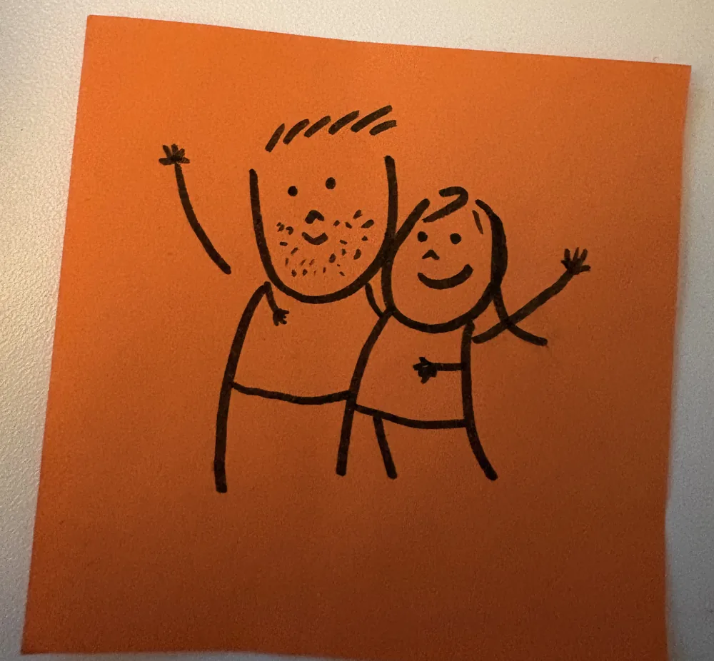
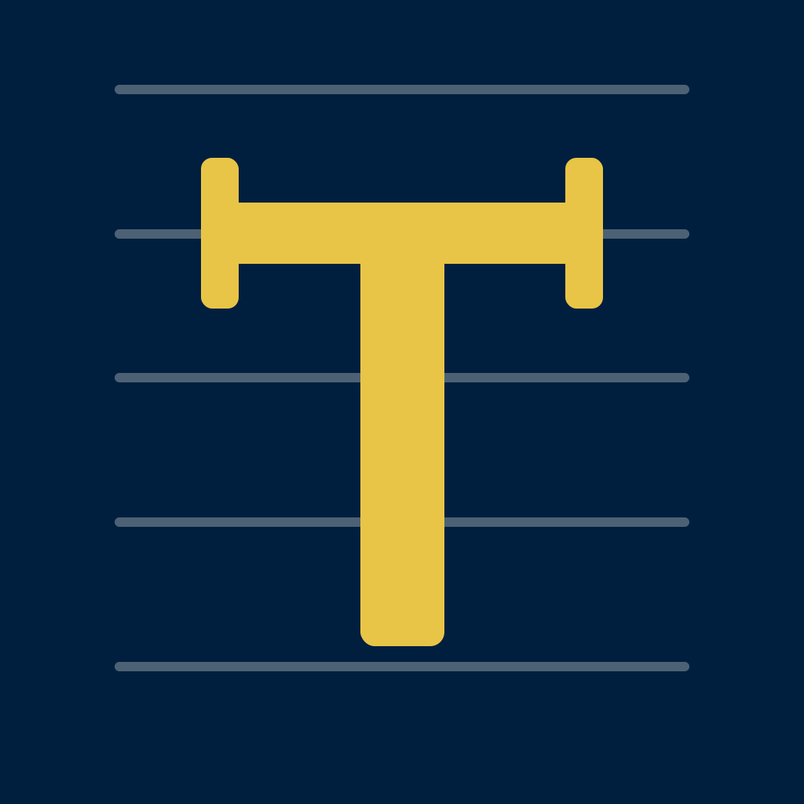

A free, privacy-first iOS app researching adaptive sound masking for tinnitus relief, built as a Master's thesis in Artificial Intelligence.
If your silence rings, this page is for you.
1 in 7
adults worldwide lives with tinnitus. For most, there is no cure, only the search for relief.
Every app has an origin story. This one is a love story.
My husband has tinnitus. For him, silence isn't silent: there's a ringing only he can hear, and it never switches off. I watched him try everything for relief: medicine, acupuncture, every masking playlist the internet could offer. Nothing held.
I couldn't make the ringing stop, so I did the only proportionate thing: I enrolled in a Master's in Artificial Intelligence. Since then I've been putting many hours into this project: researching, designing, and coding. He calls it my autistic superpower; I'd rather call it love.

The idea is simple: tinnitus is personal. The sound that quiets one person does nothing for the next: there's no single masker to prescribe, only yours. That's exactly the kind of problem machine learning was made for: a system that learns, from you, which sound gives your quiet back.
Tacet is my thesis on paper. Really, it's a promise, built out of love, not for profit, so it's free, forever. No subscription, no ads, no account. For everyone who lives with a sound nobody else can hear, and has felt like nobody was listening.
You are not alone.
If you live with tinnitus, you already know this sound. If you don't, this is the closest I can get you, built from my husband's clinical audiogram, the exact ringing he hears every waking moment.
Press & hold to hear what he hears
A ringing tone that swells and fades. It stops the instant you let the button go, but tinnitus never stops.
A guided psychoacoustic session finds your tinnitus pitch (binary search over frequency), its loudness, and the minimum level of noise that masks it, the same measures used in audiology clinics, adapted for AirPods.
Each session plays two candidate maskers, A/B style, and you rate the relief each one gives. Comparing two sounds in the same session filters out the noise of good and bad days.
A Bayesian bandit algorithm (Thompson sampling) runs entirely on your device, updating its beliefs after every comparison and converging on the masker parameters that work best for you.
Once rated, the winning sound keeps playing on a timer, in the background, with the screen locked, while you read, work, or fall asleep. Progress is tracked with the clinically validated THI questionnaire.
Everything stays on your device: your tinnitus profile, your sessions, your questionnaire scores. There is no server, no account, and no analytics.

The app is feature-complete for its first study. The planned path:
In beta on TestFlight, preparing documentation with the university and ethics committee.
Ethics approval, then a small clinical pilot.
Public release. Participation in the research opens once ethics approval is in place.
Interested as a participant, clinician, or researcher? Reach out and I'll get in touch when the study opens.
Let's connect →